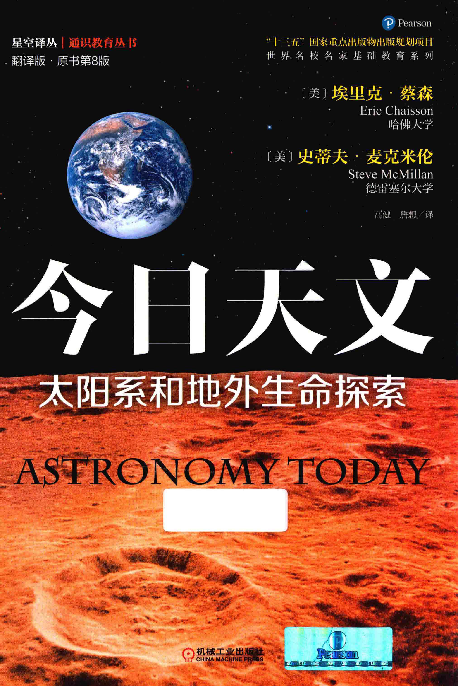
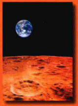
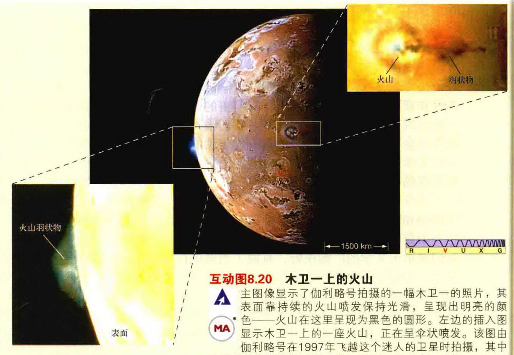
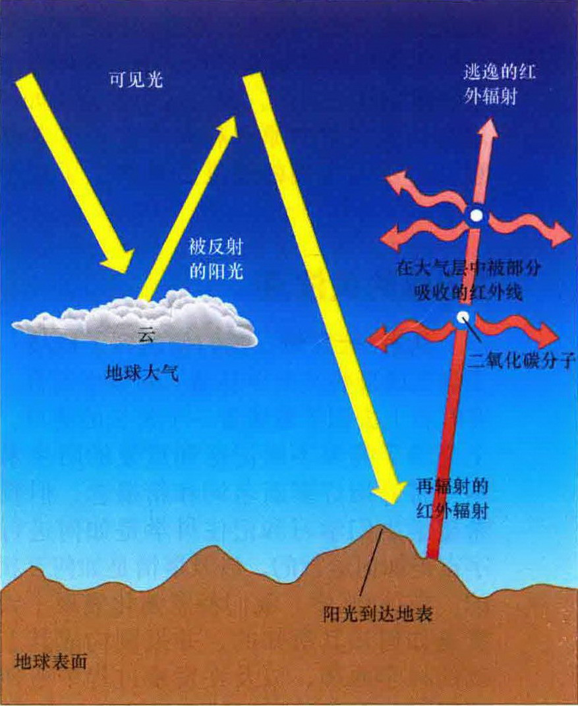
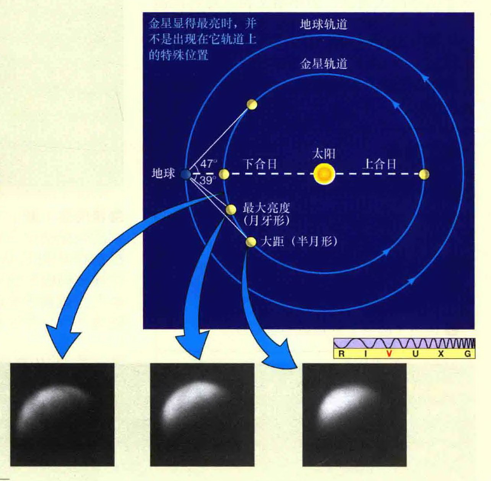
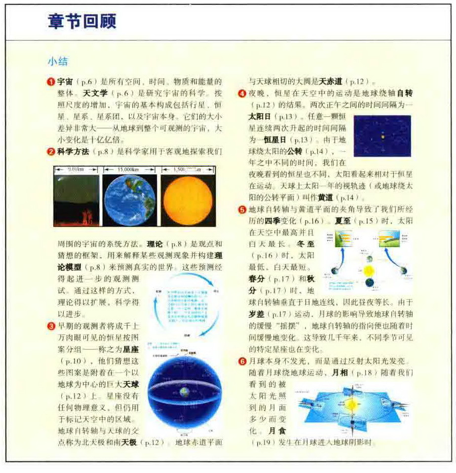

<style>
    /* 基础样式：沉浸式阅读体验 */
    body { 
        font-family: -apple-system, BlinkMacSystemFont, "Segoe UI", Roboto, "Helvetica Neue", Arial, sans-serif; 
        line-height: 1.8; 
        color: #333;
        max-width: 800px; 
        margin: 0 auto; 
        padding: 40px 20px; 
        background-color: #fff;
    }

    /* 章节单元 */
    .chapter-unit { margin-bottom: 60px; border-bottom: 1px solid #eee; padding-bottom: 40px; }

    /* 标题体系 */
    h1 { font-size: 2.4em; color: #1a237e; border-bottom: 3px solid #1a237e; padding-bottom: 15px; margin-top: 0; }
    h2 { font-size: 1.8em; color: #283593; margin-top: 50px; border-left: 5px solid #c5cae9; padding-left: 15px; }
    h3 { font-size: 1.4em; color: #303f9f; margin-top: 35px; }
    h4 { font-size: 1.1em; color: #3949ab; font-weight: bold; margin-top: 25px; }
    
    /* 正文 */
    p { margin-bottom: 1.5em; text-align: justify; text-indent: 2em; }
    ul, ol { margin-bottom: 1.5em; padding-left: 2em; }
    li { margin-bottom: 0.5em; }

    /* 元数据与版权 */
    .meta-info { font-size: 0.9em; color: #666; background: #f5f5f5; padding: 20px; border-radius: 5px; margin-bottom: 40px; }
    .copyright-page p { text-indent: 0; margin-bottom: 0.8em; }

    /* 特殊区域容器 */
    .sidebar { padding: 25px; margin: 30px 0; border-radius: 8px; page-break-inside: avoid; }
    
    /* 蓝色侧边栏 (一般信息) */
    .sidebar.info { background: #e8eaf6; border-left: 5px solid #3f51b5; }
    
    /* 红色侧边栏 (学习目标) */
    .sidebar.learning-goals { background: #ffebee; border-left: 5px solid #e53935; }
    .sidebar.learning-goals h3 { color: #c62828; margin-top: 0; }

    /* 深色侧边栏 (知识全景/Big Picture) */
    .sidebar.big-picture { background: #263238; color: #eceff1; border-left: 5px solid #cfd8dc; }
    .sidebar.big-picture h3 { color: #ffeb3b; margin-top: 0; border-bottom: 1px solid #546e7a; padding-bottom: 10px;}
    .sidebar.big-picture p { text-indent: 0; }

    /* 黑色侧边栏 (终极问题) */
    .sidebar.ultimate-question { background: #000; color: #fff; border: 1px solid #333; }
    .sidebar.ultimate-question h3 { color: #ffca28; margin-top: 0; }
    .sidebar.ultimate-question p { text-indent: 0; }

    /* 图片占位符 */
    .image-placeholder { 
        background: #f8f9fa; border: 1px dashed #adb5bd; 
        display: flex; flex-direction: column; align-items: center; justify-content: center;
        margin: 30px auto 10px auto; 
        color: #495057; font-family: monospace; font-size: 0.85em;
        position: relative;
    }
    .image-placeholder::before { content: "🖼️ Image/Diagram Area"; font-weight: bold; margin-bottom: 5px; }
    .image-placeholder::after { content: attr(data-bbox); font-size: 0.8em; color: #999; }
    
    .caption { font-size: 0.9em; color: #555; text-align: center; margin-bottom: 35px; font-style: italic; padding: 0 10%; }
    .caption strong { color: #333; font-style: normal; }

    /* 目录样式 */
    .toc-container { background: #fff; padding: 20px; }
    .toc-part { margin-top: 30px; font-weight: bold; font-size: 1.2em; color: #b71c1c; border-bottom: 2px solid #eee; padding-bottom: 5px; }
    .toc-chapter { margin-top: 20px; font-weight: bold; font-size: 1.1em; color: #333; }
    .toc-section-list { list-style: none; padding-left: 20px; font-weight: normal; font-size: 0.95em; color: #555; }
    .toc-section-list li { display: flex; justify-content: space-between; border-bottom: 1px dotted #eee; padding: 5px 0; }
    .toc-page { font-family: monospace; color: #999; }

    /* 引用/推荐语 */
    .review-quote { 
        background: #fff3e0; border-left: 4px solid #ff9800; 
        padding: 15px; margin: 20px 0; font-style: italic; 
    }
    .review-author { display: block; text-align: right; font-weight: bold; margin-top: 10px; font-style: normal; font-size: 0.9em; }

    /* 审阅者列表样式 */
    .reviewer-list {
        display: grid;
        grid-template-columns: repeat(auto-fill, minmax(240px, 1fr));
        gap: 15px;
        font-size: 0.85em;
        color: #555;
        background: #f8f9fa;
        padding: 20px;
        border-radius: 5px;
        margin-bottom: 30px;
    }
    .reviewer-list div {
        margin-bottom: 5px;
        line-height: 1.4;
        display: flex;
        flex-direction: column;
    }
    .reviewer-name {
        font-weight: bold;
        color: #333;
        display: block;
    }
    .reviewer-affil {
        font-size: 1em;
        color: #777;
        font-style: italic;
    }

    /* 签名样式 */
    .signature {
        text-align: right;
        font-weight: bold;
        margin-top: 40px;
        font-size: 1.1em;
        color: #2c3e50;
    }

</style>

<!-- 封面与图书信息 -->
<article class="chapter-unit">
    
    
    <div style="text-align: center; margin-top: 40px;">
        <p style="font-size: 1.2em; color: #c0392b; font-weight: bold; margin-bottom: 0;">星空译丛 | 通识教育丛书</p>
        <p style="font-size: 1em; color: #666;">翻译版 · 原书第8版</p>
        
        <h1 style="margin: 20px 0; font-size: 3em; border: none;">今日天文</h1>
        <h2 style="margin: 10px 0; font-size: 1.8em; border: none; color: #333;">太阳系和地外生命探索</h2>
        <h3 style="margin: 5px 0; font-size: 1.5em; border: none; color: #555; font-family: serif;">ASTRONOMY TODAY</h3>
        
        <p style="margin-top: 30px; text-indent: 0;">
            <strong>[美] 埃里克·蔡森 (Eric Chaisson)</strong> 哈佛大学<br>
            <strong>[美] 史蒂夫·麦克米伦 (Steve McMillan)</strong> 德雷塞尔大学<br>
            高健 詹想 / 译
        </p>
        
        <div style="margin-top: 40px; font-weight: bold;">
            机械工业出版社<br>
            Pearson
        </div>
    </div>
</article>

<!-- 封底推荐语 -->
<article class="chapter-unit">
    <h2>名家推荐</h2>

    <div class="review-quote">
        本书全面系统地介绍了现代天文学，内容丰富，知识严谨，视角广阔，展现了现代科学所揭示的宏伟壮丽的宇宙图景，为我们打开了星空的大门！
        <span class="review-author">——中国科幻领军人，亚洲首位雨果奖得主，九届中国科幻小说银河奖得主，《三体》作者 刘慈欣</span>
    </div>

    <div class="review-quote">
        《今日天文》深入浅出，图文并茂，对天文知识的覆盖非常系统全面，同时又兼顾了当今前沿的研究成果，是一部不可多得的基础天文学的大学教材！
        <span class="review-author">——国家天文台首席研究员，中国科学院大学天文与空间科学学院副院长 刘继峰</span>
    </div>

    <div class="review-quote">
        本书两位作者擅长向大众介绍天文知识，其第8版兼顾最新天文发现和理论解释，图文并茂，是初学者的理想读物。相信本书的出版势将有效地改善我国天文通用教材的现状，亦将在华人文化圈内产生积极反响！
        <span class="review-author">——北京大学教授 徐仁新</span>
    </div>

    <div class="review-quote">
        这是一部既非常基础、系统，又非常前沿的天文入门书。如果在我中小学，甚至大学和研究生的时候国内有这本书，就不用后来改行做天文学研究的时候那么辛苦地恶补天文知识了。强烈推荐给所有喜欢天文、学习天文，甚至从事天文学研究的读者！
        <span class="review-author">——中国科学院高能物理研究所研究员，中国科学院粒子天体物理重点实验室主任 张双南</span>
    </div>

    <div class="review-quote">
        本书是一部不可多得的全面介绍天文学基础知识和最新研究进展的优秀科普作品。我相信，无论是高中生、大学生及广大天文爱好者，甚至是天文专业的学生，都将开卷有益，从中找到自己有兴趣的内容，感受天文学的奇妙与魅力！
        <span class="review-author">——国家天文台副台长，中国天文学会第十一届理事会理事长 赵 刚</span>
    </div>    <div class="review-quote">
        手里拿着这部书的中文版样稿时，我的心情除了激动，更多了一份欣慰——国内的广大天文爱好者们，终于可以零障碍地阅读这部天文科普巨著了。如果你想只看一部书就对天文学有最大程度的了解，那么她是非常合适的选择。向所有人，尤其是热爱科学的高中生和初中生推荐这部书！
        <span class="review-author">——北京天文馆馆长、天文科普专家 朱进</span>
    </div>    <div class="review-quote">
        人类不仅关注眼前的世界，更惊奇绚丽的星空和浩瀚的宇宙。《今日天文》深入浅出、图文并茂，将博大精深的现代天文学知识生动地展现在读者面前，是一部难得的适合宽泛读者群体的天文普及读本！
        <span class="review-author">——教育部长江学者特聘教授，国家杰出青年科学基金获得者，北京天文学会理事长，北京师范大学天文系主任 朱宗宏</span>
    </div>

    
    <div class="caption">
        <strong>图片说明</strong><br>
        美国宇航局 Apollo 14号任务登月期间拍摄的地球从月面升起（实景艺术图）。
    </div>

</article>

<!-- 版权页 -->
<article class="chapter-unit copyright-page">
    <p>本书主要讲述了太阳系和地外生命探索相关内容。对广大天文爱好者来说，本书是不可多得的经典佳作。同时，本书可作为高校天文学专业的教材或教学参考书，也可作为天文通识教育选修课教材。</p>

    <p>Authorized translation from the English language edition, entitled <em>Astronomy Today Volume 1: The Solar System (8th Edition)</em>, 9780321909718 by Eric Chaisson and Steve McMillan, published by Pearson Education, Inc., publishing as Addison-Wesley, Copyright © 2014.</p>

    <p>All rights reserved. No part of this book may be reproduced or transmitted in any form or by any means, electronic or mechanical, including photocopying, recording or by any information storage retrieval system, without permission from Pearson Education, Inc.</p>

    <p>CHINESE SIMPLIFIED language edition published by PEARSON EDUCATION ASIA LTD., and China Machine Press Copyright © 2016.</p>

    <p>本书中文简体字版由培生教育出版公司授权机械工业出版社合作出版，未经出版者书面许可，不得以任何形式复制或抄袭本书的任何部分。<br>
    本书封面贴有 Pearson Education（培生教育出版集团）激光防伪标签。无标签者不得销售。</p>

    <p>北京市版权局著作权合同登记 图字：01-2014-0461 号。</p>

    <h3>图书在版编目 (CIP) 数据</h3>

    <p>今日天文. 太阳系和地外生命探索：翻译版：原书第8版 / （美）蔡森 (Chaisson, E.)，（美）麦克米伦 (McMillan, S.) 著；高健，詹想译. —北京：机械工业出版社，2016.1<br>
    书名原文：Astronomy Today Volume 1: The Solar System (8th Edition)<br>
    “十三五”国家重点出版物出版规划项目. 世界名校名家基础教育系列<br>
    ISBN 978-7-111-52268-3</p>

    <p>Ⅰ. ①今… Ⅱ. ①蔡… ②麦… ③高… ④詹… Ⅲ. ①天文学-普及读物 ②太阳系-普及读物 ③地外生命-普及读物 Ⅳ. ①P1-49</p>

    <p>中国版本图书馆CIP数据核字 (2015) 第292499号</p>

    <p>机械工业出版社（北京市百万庄大街22号 邮政编码 100037）<br>
    策划编辑：张金奎 责任编辑：张金奎 於薇 任正一<br>
    责任校对：陈越 责任印制：乔宇<br>
    北京尚唐印刷包装有限公司印刷<br>
    2016年8月第1版第1次印刷<br>
    184mm × 260mm · 24.25印张 · 750千字<br>
    标准书号：ISBN 978-7-111-52268-3<br>
    定价：98.00元</p>

    <hr>

    <div style="display: flex; justify-content: space-between;">
    <div>
    <p>凡购本书，如有缺页、倒页、脱页，由本社发行部调换</p>
    <strong>电话服务</strong><br>
    服务咨询热线：010-88361066<br>
    读者购书热线：010-68326294<br>
    &nbsp;&nbsp;&nbsp;&nbsp;&nbsp;&nbsp;&nbsp;&nbsp;&nbsp;&nbsp;&nbsp;&nbsp;&nbsp;&nbsp;&nbsp;&nbsp;&nbsp;&nbsp;&nbsp;&nbsp;&nbsp;&nbsp;&nbsp;&nbsp;&nbsp;&nbsp;010-88379203<br>
    封面无防伪标均为盗版
    </div>
    <div>
    <strong>网络服务</strong><br>
    机工官网：www.cmpbook.com<br>
    机工官博：weibo.com/cmp1952<br>
    金书网：www.golden-book.com<br>
    教育服务网：www.cmpedu.com
    </div>
    </div>

</article>

<!-- 推荐序一 -->
<article class="chapter-unit">
    <h1>推荐序一</h1>
    <p style="text-align: center; text-indent: 0; font-weight: bold;">（国家天文台副台长，中国天文学会第十一届理事会理事长 赵刚）</p>

    <p>当人类文明发轫之际，就认识到日月经天和斗转星移这类最自然的天文现象，由此催生了最古老的天文学。然而天文学也是常新的，望远镜的发明和指向星空使人类对宇宙的认识日新月异，不断产生出一些突破性的重大发现。随着天文学向全波段的扩展和延伸，除了带给我们对宇宙更多的惊奇之外，是更新的认识和更深的理解。《今日天文》这部鸿篇巨著正是系统地介绍人类的认识是如何一步步从我们所在的太阳系向宇宙深处不断展开的美丽画卷，唤醒读者关注我们所处的不可思议的神秘星空。</p>

    <p>《今日天文》作者 Eric Chaisson 和 Steve McMillan 都是长期从事天文学研究和教学工作的资深学者。他们的研究著述等身，《今日天文》是其中最突出的代表作，是当今最为畅销的天文学通识课程教材。全书气势恢宏，洋洋洒洒，蔚为大观，几乎涵盖了当今天文学的方方面面。作者为了展现天文学的广阔视野，省略了那些复杂的数学运算，但对所有概念和现象的描述十分严谨，许多地方均配以精美的彩图和注释，将博大精深的天文学栩栩如生地展现在人们面前。阅读此书，犹如跟随作者经历了一次人类逐步认识宇宙的过程，是一部不可多得的全面介绍天文学基础知识和最新研究进展的优秀科普作品。</p>

    <p>《今日天文》自1993年首次出版后，与时俱进，一版再版，至今已经刊出第8版。本书译者高健和詹想就是在第7版的基础上开始利用业余时间将其翻译成文，历时两年多，最终完成时已是第8版的译本，其付出的心血是难以想象的。高健和詹想均毕业于北京师范大学天文系，他们天文专业背景扎实，有很好的英文功底，其译作基本上完全保留了原书风貌，同时保持了作者的行文风格，译文通顺流畅，是一部值得推荐的好作品。得知这部译作即将由机械工业出版社发行，在此向他们表示由衷的祝贺。</p>

    <p>《今日天文》以广阔的时空视角，深入浅出、图文并茂地展示了当代天文学的基本概念、观测现象和研究发展的历程。我相信，无论是高中生、非物理或非天文专业的学生及广大天文爱好者，甚至是天文专业的学生，都将开卷有益，从中找到自己有兴趣的内容，感受天文学的奇妙与魅力！</p>
    
    <p style="text-align: right; text-indent: 0; margin-top: 20px;">赵刚<br>2016年4月于北京</p>
</article>

<!-- 推荐序二 -->
<article class="chapter-unit">
    <h1>推荐序二</h1>
    <h2>《今日天文》——一部非常详尽的全景式天文科普图书</h2>
    <p style="text-align: center; text-indent: 0; font-weight: bold;">（北京天文馆馆长、天文科普专家 朱进）</p>

    <p>还记得两年前，机械工业出版社的张金奎编辑谈到他们签下了美国天文教材《Astronomy Today》的版权，正在找译者翻译。当时听到这个消息时很激动。《Astronomy Today》是一本经典的天文学教材，几十年来长期用于美国大学低年级的非天文专业的学生学习天文。十五年前我在给北京大学地球物理系大一的本科生上基础天文课的时候，这本教材就是主要的参考书。</p>

    <p>今天，中文版的《Astronomy Today》、也就是《今日天文》（中译本分“太阳系和地外生命探索”“恒星：从诞生到死亡”及“星系世界和宇宙的一生”三卷），终于翻译完成，即将出版。当手里拿着这部书的中文版样稿时，我的心情除了激动，更多了一份欣慰——国内的广大天文爱好者们，终于可以零障碍地阅读这部天文科普巨著了。</p>

    <p>你也许注意到了，我在这里没有再把它称为教材，而将其称为了天文科普书。这部书的定位并不是给天文系的学生的，所以全书对涉及的物理和数学概念，基本上都是用生动而详尽的描述、结合绘制精良的插图来进行讲解，很少出现公式。基本上，只要你是一个科学爱好者，对科学概念有一些基本的了解，阅读这部书就不会有什么困难。</p>

    <p>本书科学知识不难，但是涉及的知识面却非常广，基本包括了天文学的方方面面，从业余爱好者关注的星座、望远镜，到比较专业的星系团、宇宙学等，完全称得上是全景式展现天文学各个领域的一部巨著。如果你想只看一部书就对天文学有最大程度的了解，那么她是非常合适的选择。</p>

    <p>本书的两位译者我都非常熟悉。高健是北京师范大学天文系一位优秀的青年天文教师，长期从事专业的天文基础教育和科研工作，并已经取得了不俗的成绩。詹想是我馆的一位优秀天文科普工作者，长期从事面向中小学生和公众的天文科普工作，同时参与一些科研项目。他们二位既有专业深度的保证，又有科学传播的经验，由他们共同翻译这部书对于保证翻译质量是非常重要的。</p>

    <p>向所有人，尤其是热爱科学的高中生和初中生推荐这部书！</p>

    <p style="text-align: right; text-indent: 0; margin-top: 20px;">朱进<br>2016年4月于北京</p>
</article>

<!-- 推荐序三 -->
<article class="chapter-unit">
    <h1>推荐序三</h1>
    <p style="text-align: center; text-indent: 0; font-weight: bold;">（北京大学教授 徐仁新）</p>

    <p>作为人类文明长河中一颗璀璨明珠，天文学对世界文化发展和社会进步的推动作用不可或缺。四百多年前，在伽利略第一次用自制的望远镜指向之前亚里士多德等先哲从未清晰审视的天穹之后，人类才逐渐形成崭新的宇宙观：不仅地球非宇宙中心，而且太阳在银河系内也并不起眼，甚至银河系也再普通不过了。不经过这样的世界观洗礼，很难想象会产生当今的科学和社会。此外、宇宙中各种极端物理环境是检验和发现自然基本规律的理想场所，以探测微弱天体信号为目的而发展起来的若干先进探测手段，促进了技术的提升、社会的现代化。</p>

    <p>经过前几十年的经济发展，我国正处于社会转型期，而天文知识普及尤需加强。尽管目前直接参与专业天文教育和研究的人员规模较小，但天文学试图回答的问题往往是基本而终极的。这一特点奠定了天文通识教育在提升中华民族整体素质方面的独特地位。随着我国经济实力的增强，包括 LAMOST、FAST、DAMPE、HMXT 等国内地面和空间天文观测设备已经或即将建成，重要科学的产出越来越依赖于专业天文学者的加盟。普及天文知识是培养一支优质后备专业队伍的有力保障。</p>

    <p>《今日天文》一书的作者 Eric Chaisson 和 Steve McMillan 擅长向大众介绍天文知识。该书第8版兼顾最新天文发现和理论解释，图文并茂，是初学者的理想读物。北京师范大学高健老师和北京天文馆詹想老师花大量精力翻译此著乃明智之举，势将有效地改善我国天文通用教材的现状！</p>

    <p>相信《今日天文》亦将在华人文化圈内产生积极反响！</p>

    <p style="text-align: right; text-indent: 0; margin-top: 20px;">徐仁新<br>2016年4月于北京</p>
</article>

<!-- 译者的话 -->
<article class="chapter-unit">
    <h1>译者的话</h1>

    <p>《今日天文》可能是世界上排名第一的、最为畅销的天文学通识课程教材，它的写作流畅、不拘一格，但却具有严肃的科学性，书籍配有令人赏心悦目的艺术性插图，并且致力于用新颖的媒体手段来传播推陈出新的天文内容。中译本分为三卷：第一卷“太阳系和地外生命探索”、第二卷“恒星：从诞生到死亡”及第三卷“星系世界和宇宙的一生”。全书涵盖了天文学的发展史、天文研究的物理基础和工具，带领读者探索地球、太阳系、恒星、星系和宇宙本身，引导读者超越地球的限制，跨越当前的时间，向外触及遥远的太空和宇宙，甚至是另一个地球、另一个文明。不仅如此，作者还通过引入科学研究的循环，让读者了解科学研究是如何进行的，我们如何利用这种科学方法来知晓宇宙的运作及各种天文现象的相互联系。</p>

    <p>二十多年来，结合几乎是全世界使用最广泛的、最先进的在线天文教学和考核系统“MasteringAstronomy（精通天文学）”，《今日天文》占据了众多美国大学及部分欧洲大学天文通识课程的讲台，同时也积极推动了美国大学天文通识教育的普及。《今日天文》的影响也遍及我国，目前国内广泛使用的《天文学基础》《天文学概论》及《天文学教程》等教材都在一定程度上受到了该书的影响。如此好书，在之前二十多年里，由于种种原因没有得以引进，而绝大多数中国读者也因语言问题而无缘一读，实在是一大憾事。译者曾在上世纪90年代末得到过该书的第3版，由此得以窥见许多当时天文学的新发现。如今，机械工业出版社首次在国内引进该书纸质版，期望通过发行此书能促进天文科学在国内中学和普通高校内的普及。我们很高兴也很荣幸能够作为本书的译者向大家推荐这部对天文爱好者而言堪称鸿篇巨著的《今日天文》。虽然国内各类天文科普图书并不少，但非常系统又非常详细地把整个现代天文学全貌用图文并茂的生动形式彻底展示出来的可以说是凤毛麟角。这一点正是《今日天文》在国外流行多年的原因之一。</p>

    <p>《今日天文》的定位主要是面向国外（美国）大学以前没有学习过大学数理基础类课程的、非物理或非天文专业的学生，它依靠定性推理并通过与学生熟悉的物体和现象进行类比来展示广阔的天文学，并在叙述中尽量避免复杂的数学和物理运算。鉴于国内中学物理和数学的教学已接近甚至超过美国普通大学的本科低年级，本书其实也很适合作为国内中学天文科学课程的教材使用。实际上，本书不只是教材，更是一部天文大全的科普书：有大量第一手的照片和精心绘制的彩图，行文生动活泼，用很多读者熟悉的日常事例来讲述天文知识。本书同样非常适合广大天文爱好者，尤其是爱好天文学的中学生和大学生阅读，不同年龄段和知识层次的读者都能从本书中获益良多。</p>

    <p>本书的两位作者都非常专业。Eric Chaisson 是哈佛大学的天体物理学博士，现在在著名的哈佛-史密森天体物理中心从事天体物理学的教学和研究工作。另一位作者 Steve McMillan 也是哈佛的天文学博士，现在是德雷克塞尔大学的物理学教授。两位作者都有丰富的科学论文和科学普及著作的写作经验，并曾获得过文学方面的奖项。他们的这部心血巨作，不仅向我们传达了他们对天文学的热情，也唤醒了我们对自己所处的不可思议的宇宙的关注。两位作者都非常勤奋，每隔几年就会结合当时最新的天文发现和理论，把全书内容更新再版。原书几乎每隔三年就会再版一次，如今已经是第8版。这一更新绝非简单地修改字词或者加上一两句话那么简单，而是内容的更新，甚至许多次会将整个章节体系重新编排。这样的编排再版也为我们的翻译工作带来了“麻烦”。当我们刚开始着手翻译时，参照的还是第7版。但当翻译工作进行了一大半时，编辑突然告知第8版已经出版，版权刚刚拿到，已经完成的翻译工作几乎要完全重新校排甚至是重新翻译……很难述说当时内心的感受！</p>

    <p>拨云见日，经过近两年的翻译工作，《今日天文》的最新版（第8版）终于能够呈现在读者面前了。在这里我们非常感谢机械工业出版社的张金奎编辑，正是他的策划才使得《今日天文》的中译本得以付梓面世。如今，信息传播已经进入“互联网+”时代，我们也期望《今日天文》的电子版、网络版在不远的将来也能与读者会面。本书的出版还得到了北京师范大学天文系及北京天文馆领导的大力支持，北京师范大学的张同杰教授也十分关心本书的翻译工作。</p>

    <p>《今日天文》翻译分工如下：“太阳系和地外生命探索”卷第1、2章由高健翻译，第3~12章由詹想翻译；“恒星：从诞生到死亡”卷第1~11章由高健翻译；“星系世界和宇宙的一生”卷第1章由高健翻译，第2~6章由詹想翻译；原书序言由高健、詹想共同翻译，附录内容由高健翻译，全书最后由高健统校。当然，《今日天文》几乎涵盖了天文学的方方面面，内容博大精深，两位译者熟悉的天文领域不可能如此全面，加上自身才疏学浅，书中难免有翻译错漏、表达不及的地方，甚至谬误之处也在所难免，恳请各位专家和读者不吝批评指正。欢迎给我们发邮件进行交流：jiangao@bnu.edu.cn, universezx@bjp.org.cn，我们非常希望得到您的反馈和建议！</p>

    <p style="text-align: right; text-indent: 0; margin-top: 20px;">译者<br>2016年4月于北京</p>
</article>

<!-- 原书序 -->
<article class="chapter-unit">
    <h1>原书序</h1>

    <p>天文学是一门充盈着新发现的科学。在新技术和新颖理论见解的推动下，对宇宙的研究不断地改变着我们对宇宙的理解。我们很高兴能有机会在这本书中呈现一些具有代表性的当今天文学中已知的事实、不断发展的思想和前沿发现的事例。</p>

    <p>《今日天文》面向以前没有学习过大学科学课程和不主修物理或天文专业的学生，可用于一个或两个学期的非技术性的天文学课程。我们展示天文学的广阔视野，直截了当地进行描述，省略了复杂的数学运算。然而，复杂数学运算的缺失，却并不会妨碍我们讨论重要的概念。相反，我们依靠定性推理并用学生熟悉的物体和现象进行类比，用于解释问题的复杂性，以避免过分简化。我们试图向学生传达我们对天文学的热情，唤醒学生关注我们所处的不可思议的宇宙。</p>

    <p>我们非常高兴地看到，本书的前七版深受众多天文教育团体的喜爱。很多老师和学生在使用本书的早期版本后，给了我们有益的反馈和建设性的批评，我们从中学会了如何更好地表达天文学的原理和兴奋点。许多受这些意见启发而得到的改进已被纳入了这个新版本中。</p>

    <h2>第8版的关注点</h2>
    <p>从第1版开始，我们便遇到了挑战：这本书需要既准确又简单易懂。对学生而言，天文有时看上去似乎意味着一个长长的清单，清单上充满了需要不断记忆和重复的陌生术语。本书将介绍许多新名词和新概念，但我们还希望学生们学习和记住科学是如何进行的，宇宙是如何运行的，以及事情是如何互相联系的。在第8版中，我们特意强化表现了天文学家是如何知其所知的，并强调构成其工作基础的科学原理，以及在发现过程中所使用的工序。</p>

    <h3>新的和经过修订的内容</h3>
    <p>天文学是一个快速发展的领域，在《今日天文》第7版出版至今的三年中，我们领略了大量覆盖天文研究全部领域的新发现。第8版中几乎每一章都大幅更新了内容。有几章还重新编排了顺序，以精简总体性的介绍，强化我们的关注点——科学过程，反映当代天文学新的认识和重点。</p>
    <p>除了更新全书众多天文对象的数字和性质外，我们还做出了许多实质性的改变：</p>
    <ul>
        <li>在第3章中增加了一个新的关于行星探测的两页长的模块。</li>
        <li>将太阳系形成的整体“标准”理论合并并重组到第3章中，奠定了解释第2部分中所展示的行星数据的基础，并在第12章中专注于太阳系的详情、不规则行为，以及系外行星。</li>
        <li>在探索5-1中更新了嫦娥、GRAIL以及其他最新的月球探测器的讨论，对月球勘探者、月球勘测轨道飞行器、月球陨坑观测与遥感卫星进行了新的讨论，并更新了关于寻找月球冰的知识。</li>
        <li>在第5章中，基于最新的GRAIL探测器的结果更新了关于月球核心和内部的描述。</li>
        <li>在第5章中根据信使号探测器的成果，更新了关于水星表面特征的讨论。</li>
        <li>在第5章中根据信使号探测器的全新数据，更新了关于水星内核、外核、磁场及它们的形成的讨论。</li>
        <li>在第6章中更新了关于金星快车号的发现及其状况的讨论。</li>
        <li>在第7章中，更新了关于火星北部低地起源的碰撞假说的讨论。</li>
        <li>在第7章中重组和更新了火星表面液态水的讨论。</li>
        <li>在第7章中更新了机遇号、勇气号和凤凰号着陆器的讨论；更新了有关好奇号着陆器的新内容及发现。</li>
        <li>修订了第7章里关于火星卫星的讨论。</li>
        <li>更新了探索8-1中彗星撞击的描写，指出这种撞击在太阳系中是司空见惯的。</li>
        <li>在第9章中，修订了关于土星风暴、土星新卫星，以及土星环上的新特征的讨论。</li>
        <li>在第9章中，扩展描述了卡西尼-惠更斯任务对土卫六和土卫二的观测。</li>
        <li>在第10章中，更新了关于天王星的倾斜自转轴，以及天王星和海王星上天气模式新图像的讨论。</li>
        <li>在第11章中，增加了对前往灶神星和谷神星的曙光号探测器的描写。</li>
        <li>在第11章中，更新了对越地小行星和掠地小行星的描写。</li>
        <li>在第11章中，更新了对冥王星卫星和海王星之外天体的描写。</li>
        <li>在第12章中，增加了新的“探索”模块，描述半人马座阿尔法星的行星系统。</li>
        <li>在第12章中，扩展介绍了系外行星的发现、性质，以及开普勒候选名单。</li>
        <li>在第12章中，对位于其母星宜居带中的类地行星和超级地球进行了新的讨论。</li>
        <li>在第13章中，更新了关于行星系统频繁性以及每一系统的宜居行星数量的讨论。</li>
        <li>添加了有用的注释，现在书中大约一半的图片都采用了这种非常有益于教学的工具。</li>
        <li>在很多图中加入了距离标尺，以帮助读者了解和感受宇宙的浩瀚。</li>
        <li>为了保持与时俱进和清晰起见，更换了一些较旧的图片。</li>
        <li>更新了全书的艺术设计。</li>
        <li>为网上资料（在线内容）增加了新的目录表，其中按章节列出了本书提供的所有在线资料：解说图、互动图、动画或视频，以及自学指南。</li>
    </ul>

    <!-- 侧边栏：图解说明 -->
    <aside class="sidebar info">
        <h3>图解说明</h3>
        <p>可视化在天文教学和实践中具有重要作用，我们将继续在书中大力强化这一方面。我们尝试在书中点缀的艺术概念图中结合美学和科学性、准确性，力求呈现最佳的和最新的宇宙天体的大尺度影像。每幅图都经过精心雕琢以促进学生的学习，并在教学法上与相关的重要科学事实和思想讨论紧密联系。这个版本包含超过100幅修订的图像，显示了最新的影像以及从中观察得到的成果。</p>

        <h4>复合艺术图</h4>
        <p>一幅单一的图像——无论是照片还是艺术概念图——都很难展示复杂问题的所有方面。只要有可能，我们会使用多图组合，以最生动的方式来传达最大的信息量：</p>
        <ul>
            <li>可见光图像往往伴随着与其对应的在其他波长处拍摄的图像。</li>
            <li>解释性线条往往叠加或并列在真实的天文照片上，以让读者真正“明白”照片揭示了什么。</li>
            <li>多图分级显示，用于从大视场照片到放大的近距离详细图片，这样可以在更大的范围内理解展示的内容。</li>
        </ul>

        <h4>互动图像和照片</h4>
        <p>书中这个图标引导学生在“MasteringAstronomy”网站中找到艺术图和照片的互动版本。使用网上的小程序，学生可以控制一些元素，如时间、波长、尺度和角度，以提高对这些图像的理解。</p>
        
        
        <div class="caption">
            <strong>互动图8.20 木卫一上的火山</strong><br>
            主图像显示了伽利略号拍摄的一幅木卫一的照片，其表面靠持续的火山喷发保持光滑，呈现出明亮的颜色——火山在这里呈现为黑色的圆形。左边的插入图显示木卫一上的一座火山，正在呈伞状喷发。该图由伽利略号在1997年飞越这个迷人的卫星时拍摄，其中的羽状物经测量约150km高、300km长。右边的插入图显示另一座火山，是从正上方拍摄的，这里能被解析到的表面特征仅几千米。[美国国家航空航天局(NASA)]
        </div>

        
        <div class="caption">
            <strong>互动图4.5 温室效应</strong><br>
            不被云层反射的阳光到达地表，将地表加热。从地表再辐射的红外辐射被大气中的二氧化碳（也包括水蒸气，此处未显示）部分吸收，从而导致整个地表的温度上升。
        </div>

        <h4>解说图（新）</h4>
        <p>解说图配有简短的视频，将学生从书中复杂的图像里解放出来，通过描述来扩展学生对基本概念的理解，包括讲述、增强的视觉效果，以及一到两个嵌入式问题，并伴随经过分级的一到两个解决问题的实践。教师可以根据它们在课堂上讲解主题，也可以指定它们为家庭作业、自学材料或是作为预习内容的一部分。</p>
        
        <h4>图注（改进）</h4>
        <p>在图片的关键点上策略性地配上注释（总是呈现为蓝色字体），培养学生阅读和解释复杂图像的能力，让学生专注于最相关的信息，整合文字和图像知识。</p>

        
        <div class="caption">
            <strong>解说图6.2 金星的亮度</strong><br>
            金星在其与地球的距离最大时会变成“圆满”状态，即位于太阳的对面（上合日）。随着距离减小，被阳光照射的一面一点一点变得可见。最接近地球时，金星处于我们和太阳之间（下合日），所以我们不能看到该星球被阳光照射的一面。金星最亮时大约距离太阳39°。（比较图2.12）[插入图：加利福尼亚大学(UC)/利克天文台(Lick Observatory)]
        </div>

        <h4>全波段光谱覆盖和光谱图标</h4>
        <p>天文学家利用电磁波谱的整个范围来收集有关宇宙的信息。本书采用在射电、红外、紫外、X射线或伽马射线波段拍摄的图像来补充可见光图像。由于有时很难（即使对专业人员来说）一眼识别出是可见光照片还是由其他波段生成的伪彩色图像，所以书中每幅照片都配以一个图标，以识别用于拍摄图像的电磁波的波长。</p>
    </aside>

    <p>在他们的帮助下，我们修改了每一章的章首与章末，以提高其对学生的有用性。</p>

    <!-- 学习目标 -->
    <aside class="sidebar learning-goals">
        <h3>学习目标（新）</h3>
        <p>研究表明，初学的学生都怕大段的文字内容。出于这个原因，在每章的开始，我们提出了一些（一般5个或6个）明确的“学习目标”。它们能帮助学生开始本章的阅读，还能测试他们对关键概念的掌握程度。这些“学习目标”都进行了编号，是每章小结中的关键点，而小结又相应地再次提到了书中的段落。突出每章最重要的内容有助于学生按优先顺序区分信息，并且也有助于复习。“学习目标”按照可客观测试的方式组织和措辞，为学生提供衡量自己学习进程的手段。</p>
        
        <div style="background: #fff; padding: 15px; border: 1px solid #e53935; margin-top: 10px;">
            <h4 style="color: #c62828; margin-top:0;">学习目标</h4>
            <p>本章的学习将使你能够：</p>
            <ol>
                <li>总结星际介质的组成和物理性质。</li>
                <li>描述发射星云的性质，并说明其在恒星生命周期中的重要性。</li>
                <li>列举出一些星际暗云的基本性质。</li>
                <li>列举出探测星际物质性质所需的射电天文技术。</li>
                <li>说明星际分子的性质和重要性。</li>
            </ol>
        </div>
    </aside>

    <!-- 知识全景 -->
    <aside class="sidebar big-picture">
        <h3>知识全景（改进）</h3>
        <p>每章开篇的“知识全景”板块概述这一章所传授的总体信息，帮助学生了解该章内容如何与对宇宙的广泛理解发生联系。</p>
        <div style="background: #263238; color: #eceff1; padding: 15px; margin-top: 10px; font-size: 0.9em;">
            <strong style="color: #ffeb3b; display:block; margin-bottom:5px;">知识全景 夜空中到处都是恒星。</strong>
            肉眼大约可见6000颗恒星，分布在88个星座中。如果使用双筒望远镜或小型天文望远镜，就可见更多的（上百万颗）恒星。恒星的总数是无法计量的，而且只有相当少的恒星被详细研究过。然而，相比宇宙中其他任何天体，恒星告诉了我们更多有关天文学的基础知识。
        </div>
    </aside>

    <!-- 终极问题 -->
    <aside class="sidebar ultimate-question">
        <h3>终极问题（新）</h3>
        <p>每章以一个广泛的、开放式的问题结尾，旨在点燃学生对天文学研究最前沿中仍然悬而未决的问题的好奇心。“终极问题”建立在这一章所介绍的内容基础上，邀请学生们思考比所学范围更广阔的领域。</p>
        <div style="border-top: 1px solid #555; padding-top: 10px; margin-top: 10px;">
            <strong style="color: #ffca28;">终极问题</strong> 我们的太阳将随着年龄的增大而膨胀，大约在50亿年内，它会耗尽燃料，并注定会迅速膨胀成为一颗红巨星。目前最吸引人的问题是，成为红巨星的太阳是否膨胀得足以吞噬掉地球？这一问题经常被提起，但由于时间还很遥远，所以很快又被忽视掉。没有人能确定这一点。我们知道的是，太阳正在失去大量的物质，从而使其引力变小。也许这将会使地球最终退后到相对安全的轨道上。
        </div>
    </aside>

    <h3>其他教学特色</h3>

    <p><strong>概念理解检查</strong>：我们在每一章中纳入了一些“概念理解检查”——这是一些关键性问题，需要读者重新思考一些刚刚讲述过的内容或尝试将这些知识放到一个更广阔的背景里去。“概念理解检查”中问题的答案附在书的后面。</p>
    
    <div style="background: #fff3e0; border-left: 4px solid #ff9800; padding: 10px; font-style: italic; margin: 10px 0;">
        <strong>概念理解检查</strong><br>
        √ 为什么天文学家在内行星和外行星之间做出如此分明的区别？
    </div>

    <p><strong>科学过程理解检查</strong>：现在，每章还包括一个或两个“科学过程理解检查”，类似“概念理解检查”，但明确澄清下列问题：科学是如何进行的，科学家是如何得到结论的。“科学过程理解检查”中问题的答案也附在书的后面。</p>

    <div style="background: #fff3e0; border-left: 4px solid #ff9800; padding: 10px; font-style: italic; margin: 10px 0;">
        <strong>科学过程理解检查</strong><br>
        √ 在哪种情况下我们能看到不同于一般的特殊彗星？
    </div>

    <p><strong>概念链接</strong>：和许多科学学科一样，天文学中几乎每个话题都可能会牵涉几乎所有其他的话题。特别是，书中提前对天文内容和物理原理之间的联系进行详细解释是非常重要的。提醒学生回想这些联系是很重要的，他们因此可以回忆起那些原理，以让后面的讨论更为轻松；而且，如果有必要，还可以进行复习。因此，我们在整本书中插入了“概念链接”——标记出不同章节内容之间的关键知识链接的记号。该链接以符号 “∞” 加上章节序号表示，说明正在讨论的内容在某些关键点上与前面提出的观点相关，并在继续学习前为复习提供方向。</p>

    <p><strong>关键术语</strong>：和所有学科一样，天文学也有自己的专业词汇。为了帮助学生学习，最重要的天文学术语在书中首次亮相时以粗体显示。在每章的小结里，粗体显示的关键术语链接着定义该术语的页码。此外，本书结尾有一个扩展的按字母顺序排列的词汇表，定义了所有的关键术语，并指出它们在书中第一次被使用的位置。</p>

    <p><strong>赫罗图和透明片叠图</strong>：本书中所有的赫罗图均按照统一的格式绘制，并且使用真实的数据。此外，一组独特的透明叠加图醒目地向学生们演示了如何使用赫罗图来帮助我们整理有关恒星的信息，并追踪恒星的演化历史。</p>

    <p><strong>详细说明模块</strong>：这类文本框对正文中定性讨论的主题提供更定量的处理。把这些更具挑战性的话题从正文中移出，将它们放置在位于对应章节中的一个独立设计的模块内（以便在课堂上涉及它们，作为补充内容安排给学生，或者干脆留给那些感兴趣的学生选读），这样的设计将使得教师在设计课程深度时有更大的灵活性。</p>

    <p><strong>探索模块</strong>：探索各种有趣的补充内容，探索模块使读者能更深入地了解科学知识的发展，并强调科学过程。</p>

    <h3>章末问题、问答和实践活动（新）</h3>
    <p>大幅改组了章末内容的许多元素：</p>
    <ul>
        <li>每一章都包含<strong>复习和讨论</strong>，可以用于课堂内复习或者布置为作业。同“概念自测”一样，这些复习题的答案可以在本章中找到。讨论题更深入地探讨特定的主题，通常需要给出观点，而不仅仅是列出事实。和所有讨论一样，这些问题通常没有一个“正确”的答案。以POS图标标记的问题，鼓励学生探索“科学过程”，每一个“学习目标”都体现在某个“复习和讨论”题中，并以LO标记出来。</li>
        <li>每章还包含了选择题形式的<strong>概念自测题</strong>，包括挑选出来的直接与文中具体图片或图表绑定的问题，允许学生评估他们对本章内容的理解。这些问题均标记有VIS图标。本书的结尾会给出所有这些问题的答案。</li>
        <li>章末的内容包括一些基于本章内容、需要一些数值计算的<strong>问答</strong>。在许多情况下，这类问题都与书中做出的定量描述（但没有详细的计算）直接相关。这些问题的解决方法并没有完整地包含在章节中，但解决这些问题所需的信息已在文中提及。本书末尾给出了奇数编号的问题的答案。</li>
        <li>这一版还有一个新的内容，章末内容以与文中内容相关的协作和独立的<strong>实践活动</strong>结束。这些活动的范围从基本的肉眼和望远镜观测项目，到民意调查、问卷调查、小组讨论，以及网上天文研究。</li>
    </ul>

    <!-- 章节回顾小结 -->
    <aside class="sidebar info">
        <h3>章节回顾小结</h3>
        <p>“章节回顾小结”是主要的复习工具，与每章开头的“学习目标”相联系。每章介绍的一些关键术语再次被列出，贯穿上下文并以粗体表示，并且伴有关键图片及其出现在正文中的页码。</p>
        
    </aside>

    <h3>教师资源</h3>
    <p><strong>精通天文学网站 (www.masteringastronomy.com)</strong>： "MasteringAstronomy (精通天文学)" 是全世界使用最广泛的、最先进的天文教学和考核系统。通过吸引全国（译者注：美国全国）学生按部就班地学习，“精通天文学”建立了无与伦比的关于学习挑战和学习模式的数据库。利用这些学生数据，一个知名的天文教育研究团队细化了每一项实践活动和每一个问题，结果得到了一个具有独特教育效力和评价精确度的实践活动库。“精通天文学”为学生提供了两种学习系统：动态自学区和参与网上协作的能力。</p>

    <p>“精通天文学”也为教师提供了一个快速而有效的方式，既能保证网上家庭作业的数量、质量和较为广泛的覆盖范围，又能恰到好处地协调作业难度和花在作业上的时间。学习指南指导90%的学生从错误答案反馈中得到正确的答案。强大的后续诊断系统使得教师能够评估其班级的整体进步，或是快速确定个别学生遇到的困难。学习指南围绕本书的内容编写，书中所有的章末问题在“精通天文学”中都能找到。那里还包括一个有丰富媒体资源的自学区域，不管教师是否将其布置为作业，学生都可以使用。</p>

    <p><strong>教学指导</strong>：经过詹姆斯·希思（奥斯汀社区大学）的修订，该在线指南提供：教学大纲样板和课程安排，每一章的概述，教学技巧，有用的类比，课堂演示的建议，有关每章末尾“复习和讨论”题的写作问题、选读材料和答案及解法，其他参考资料和资源。</p>

    <p><strong>试题库</strong>：我们为第8版重新编辑和修订了大约2800道试题。这些试题是按章节和题目类型进行编排的。第8版的试题库已经被彻底修改，包括许多为增加的重点概念而编写的新选择题和问答题。这个试题库可用微软的Word格式和TestGen格式（见教师资源DVD中的描述）读取。</p>

    <p><strong>“精通天文学”中的教师资源区</strong>：“精通天文学”系统还有教师资源区，为教师提供课上或课下需要的所有电子资源。该区域不仅包含了教师资源手册，还包含了本书所有的图片，以JPEG和PowerPoint格式存储；并包含了额外的图像、星图，以及来自“精通天文学”学习区的动画和视频。该区域还包含TestGen，这是一个易于使用的、完全联网的程序，可以用于创建小测验以及期末考试。这里也提供试题库中的试题，教师可以用“试题编辑器”来修改现有的试题或是创建新的试题。它还包含分章节的讲解大纲以及概念性的“随堂”问题，都是PowerPoint格式的。这样的格式在个人计算机和苹果计算机中都能使用。</p>
    
    <h3>学生资源</h3>
    <ul style="list-style: none; padding: 0;">
        <li><strong>MA 精通天文学网站 (www.masteringastronomy.com)</strong>: 网站中的作业、指南、评价体系是独特的，能够独立指教每个学生，针对他们的错误答案提供即时的反馈。当他们遇到困难时，可以先解决比较容易的次要问题，这时采用的方法能为他们带来提高。学生也可以使用自学区，它包含测试练习、自学指南、新的解说和互动图、动画、视频等。</li>
        <li><strong>“精通天文学”提供“培生电子文本”</strong>: 当与新书一起购买“精通天文学”时，它会自动提供，你也可以在线升级购买。培生电子文本包括文本，以及可以放大以便更好观看的图片，当学生有机会上网时，他们就可以使用培生电子文本。通过培生电子文本，学生还能够熟悉定义和术语，以帮助他们记忆词汇和阅读材料。学生还可以使用注释功能在培生电子文本里做笔记。</li>
        <li><strong>《星光灿烂学院》学生授权码卡片，第7版</strong>: 这款最畅销的天文软件可以让你逃离银河系，到7亿光年之外的太空深处去旅行。你可以在极其逼真的星域里欣赏超过1600万颗恒星，并放大成千上万的星系、星云和星团。你还能前后穿越20万年的时间，欣赏一个动态的、不断变化的宇宙中的关键性天文事件。你可以离开地球，从崭新的视角观赏行星的运动。基于其惊人的虚拟现实、强大的套件功能和直观易用性，《星光灿烂学院》没有辜负它是“天文软件中最闪亮的”这一声誉。</li>
    </ul>

</article>

<!-- 致谢 -->
<article class="chapter-unit">
    <h1>致谢</h1>
    
    <p>纵观最终成就这本书的许多草稿，我们一直依靠着很多同伴的批判性分析。他们建议的范围非常广泛，从全书整体组织的宏观问题，到每个句子的技术准确性的细微之处。我们还得益于来自本书第7版的用户的许多很好的意见和反馈。对许多帮助了我们的同伴，我们致以最诚挚的感谢。</p>

    <h3>第8版的审阅者</h3>
    <div class="reviewer-list">
        <div><span class="reviewer-name">Brett Bochner</span><span class="reviewer-affil">Hofstra University</span></div>
        <div><span class="reviewer-name">James Brau</span><span class="reviewer-affil">University of Oregon</span></div>
        <div><span class="reviewer-name">Christina Cavalli</span><span class="reviewer-affil">Austin Community College</span></div>
        <div><span class="reviewer-name">Asifud-Doula</span><span class="reviewer-affil">Pennsylvania State University</span></div>
        <div><span class="reviewer-name">Robert Egler</span><span class="reviewer-affil">North Carolina State University</span></div>
        <div><span class="reviewer-name">David Ennis</span><span class="reviewer-affil">The Ohio State University</span></div>
        <div><span class="reviewer-name">Erika Gibb</span><span class="reviewer-affil">University of Missouri, St.Louis</span></div>
        <div><span class="reviewer-name">James Higdon</span><span class="reviewer-affil">Georgia Southern University</span></div>
        <div><span class="reviewer-name">Steve Kawaler</span><span class="reviewer-affil">Iowa State University</span></div>
        <div><span class="reviewer-name">Kristine Larsen</span><span class="reviewer-affil">Central Connecticut State University</span></div>
        <div><span class="reviewer-name">George Nock</span><span class="reviewer-affil">Northeast Mississippi Community College</span></div>
        <div><span class="reviewer-name">Ron Olowin</span><span class="reviewer-affil">Saint Mary's College</span></div>
        <div><span class="reviewer-name">John Scalo</span><span class="reviewer-affil">University of Texas, Austin</span></div>
        <div><span class="reviewer-name">Trace Tessier</span><span class="reviewer-affil">Central New Mexico Community College</span></div>
        <div><span class="reviewer-name">Robert K. Tyson</span><span class="reviewer-affil">University of North Carolina at Charlotte</span></div>
        <div><span class="reviewer-name">Grant Wilson</span><span class="reviewer-affil">University of Massachusetts, Amherst</span></div>
    </div>

    <h3>之前版本的审阅者</h3>
    <div class="reviewer-list">
        <div><span class="reviewer-name">Stephen G. Alexander</span><span class="reviewer-affil">Miami University of Ohio</span></div>
        <div><span class="reviewer-name">William Alexander</span><span class="reviewer-affil">James Madison University</span></div>
        <div><span class="reviewer-name">Robert H. Allen</span><span class="reviewer-affil">University of Wisconsin, La Crosse</span></div>
        <div><span class="reviewer-name">Barlow H. Allen</span><span class="reviewer-affil">University of Wisconsin, La Crosse</span></div>
        <div><span class="reviewer-name">Nadine G. Barlow</span><span class="reviewer-affil">Northern Arizona University</span></div>
        <div><span class="reviewer-name">Cecilia Barnbaum</span><span class="reviewer-affil">Valdosta State University</span></div>
        <div><span class="reviewer-name">Peter A. Becker</span><span class="reviewer-affil">George Mason University</span></div>
        <div><span class="reviewer-name">Timothy C. Beers</span><span class="reviewer-affil">University of Evansville</span></div>
        <div><span class="reviewer-name">William J. Boardman</span><span class="reviewer-affil">Birmingham Southern College</span></div>
        <div><span class="reviewer-name">Donald J. Bord</span><span class="reviewer-affil">University of Michigan, Dearborn</span></div>
        <div><span class="reviewer-name">Elizabeth P. Bozyan</span><span class="reviewer-affil">University of Rhode Island</span></div>
        <div><span class="reviewer-name">Malcolm Cleaveland</span><span class="reviewer-affil">University of Arkansas</span></div>
        <div><span class="reviewer-name">Anne Cowley</span><span class="reviewer-affil">Arizona State University</span></div>
        <div><span class="reviewer-name">Bruce Cragin</span><span class="reviewer-affil">Richland College</span></div>
        <div><span class="reviewer-name">Ed Coppola</span><span class="reviewer-affil">Community College of Southern Nevada</span></div>
        <div><span class="reviewer-name">David Curott</span><span class="reviewer-affil">University of North Alabama</span></div>
        <div><span class="reviewer-name">Norman Derby</span><span class="reviewer-affil">Bennington College</span></div>
        <div><span class="reviewer-name">John Dykla</span><span class="reviewer-affil">Loyola University, Chicago</span></div>
        <div><span class="reviewer-name">Kimberly Engle</span><span class="reviewer-affil">Drexel University</span></div>
        <div><span class="reviewer-name">Michael N. Fanelli</span><span class="reviewer-affil">University of North Texas</span></div>
        <div><span class="reviewer-name">Richard Gelderman</span><span class="reviewer-affil">Western Kentucky University</span></div>
        <div><span class="reviewer-name">Harold A. Geller</span><span class="reviewer-affil">George Mason University</span></div>
        <div><span class="reviewer-name">David Goldberg</span><span class="reviewer-affil">Drexel University</span></div>
        <div><span class="reviewer-name">Martin Goodson</span><span class="reviewer-affil">Delta College</span></div>
        <div><span class="reviewer-name">David G. Griffiths</span><span class="reviewer-affil">Oregon State University</span></div>
        <div><span class="reviewer-name">Donald Gudehus</span><span class="reviewer-affil">Georgia State University</span></div>
        <div><span class="reviewer-name">Thomasanna Hail</span><span class="reviewer-affil">Parkland College</span></div>
        <div><span class="reviewer-name">Clint D. Harper</span><span class="reviewer-affil">Moorpark College</span></div>
        <div><span class="reviewer-name">Marilynn Harper</span><span class="reviewer-affil">Delaware County Community College</span></div>
        <div><span class="reviewer-name">Susan Hartley</span><span class="reviewer-affil">University of Minnesota, Duluth</span></div>
        <div><span class="reviewer-name">Joseph Heafner</span><span class="reviewer-affil">Catawaba Valley Community College</span></div>
        <div><span class="reviewer-name">James Heath</span><span class="reviewer-affil">Austin Community College</span></div>
        <div><span class="reviewer-name">Fred Hickok</span><span class="reviewer-affil">Catonsville Community College</span></div>
        <div><span class="reviewer-name">Lynn Higgs</span><span class="reviewer-affil">University of Utah</span></div>
        <div><span class="reviewer-name">Darren L. Hitt</span><span class="reviewer-affil">Loyola College, Maryland</span></div>
        <div><span class="reviewer-name">F. Duane Ingram</span><span class="reviewer-affil">Rock Valley College</span></div>
        <div><span class="reviewer-name">Steven D. Kawaler</span><span class="reviewer-affil">Iowa State University</span></div>
        <div><span class="reviewer-name">William Keel</span><span class="reviewer-affil">University of Alabama</span></div>
        <div><span class="reviewer-name">Marvin Kemple</span><span class="reviewer-affil">Indiana University-Purdue University, Indianapolis</span></div>
        <div><span class="reviewer-name">Mario Klairc</span><span class="reviewer-affil">Midlands Technical College</span></div>
        <div><span class="reviewer-name">Kristine Larsen</span><span class="reviewer-affil">Central Connecticut State University</span></div>
        <div><span class="reviewer-name">Andrew R. Lazarewicz</span><span class="reviewer-affil">Boston College</span></div>
        <div><span class="reviewer-name">Robert J. Leacock</span><span class="reviewer-affil">University of Florida</span></div>
        <div><span class="reviewer-name">Larry A. Lebofsky</span><span class="reviewer-affil">University of Arizona</span></div>
        <div><span class="reviewer-name">Matthew Lister</span><span class="reviewer-affil">Purdue University</span></div>
        <div><span class="reviewer-name">M. A. Lohdi</span><span class="reviewer-affil">Texas Tech University</span></div>
        <div><span class="reviewer-name">Michael C. LoPresto</span><span class="reviewer-affil">Henry Ford Community College</span></div>
        <div><span class="reviewer-name">Phillip Lu</span><span class="reviewer-affil">Western Connecticut State University</span></div>
        <div><span class="reviewer-name">Fred Marschak</span><span class="reviewer-affil">Santa Barbara College</span></div>
        <div><span class="reviewer-name">Matthew Malkan</span><span class="reviewer-affil">University of California, Los Angeles</span></div>
        <div><span class="reviewer-name">Steve Mellema</span><span class="reviewer-affil">Gustavus Adolphus College</span></div>
        <div><span class="reviewer-name">Chris Mihos</span><span class="reviewer-affil">Case Western Reserve University</span></div>
        <div><span class="reviewer-name">Milan Mijic</span><span class="reviewer-affil">California State University, Los Angeles</span></div>
        <div><span class="reviewer-name">Scott Miller</span><span class="reviewer-affil">Pennsylvania State University</span></div>
        <div><span class="reviewer-name">Mark Moldwin</span><span class="reviewer-affil">University of California, Los Angeles</span></div>
        <div><span class="reviewer-name">Richard Nolthenius</span><span class="reviewer-affil">Cabrillo College</span></div>
        <div><span class="reviewer-name">Edward Oberhofer</span><span class="reviewer-affil">University of North Carolina, Charlotte</span></div>
        <div><span class="reviewer-name">Andrew P. Odell</span><span class="reviewer-affil">Northern Arizona University</span></div>
        <div><span class="reviewer-name">Gregory W. Ojakangas</span><span class="reviewer-affil">University of Minnesota, Duluth</span></div>
        <div><span class="reviewer-name">Ronald Olowin</span><span class="reviewer-affil">Saint Mary’s College of California</span></div>
        <div><span class="reviewer-name">Robert S. Patterson</span><span class="reviewer-affil">Southwest Missouri State University</span></div>
        <div><span class="reviewer-name">Cynthia W. Peterson</span><span class="reviewer-affil">University of Connecticut</span></div>
        <div><span class="reviewer-name">Lawrence Pinsky</span><span class="reviewer-affil">University of Houston</span></div>
        <div><span class="reviewer-name">Andreas Quirrenback</span><span class="reviewer-affil">University of California, San Diego</span></div>
        <div><span class="reviewer-name">Richard Rand</span><span class="reviewer-affil">University of New Mexico</span></div>
        <div><span class="reviewer-name">James A. Roberts</span><span class="reviewer-affil">University of North Texas</span></div>
        <div><span class="reviewer-name">Gerald Royce</span><span class="reviewer-affil">Mary Washington College</span></div>
        <div><span class="reviewer-name">Dwight Russell</span><span class="reviewer-affil">Baylor University</span></div>
        <div><span class="reviewer-name">Vicki Sarajedini</span><span class="reviewer-affil">University of Florida</span></div>
        <div><span class="reviewer-name">Malcolm P. Savedoff</span><span class="reviewer-affil">University of Rochester</span></div>
        <div><span class="reviewer-name">John Scalo</span><span class="reviewer-affil">University of Texas at Austin</span></div>
        <div><span class="reviewer-name">John C. Schneider</span><span class="reviewer-affil">Catonsville Community College</span></div>
        <div><span class="reviewer-name">Larry Sessions</span><span class="reviewer-affil">Metropolitan State College of Denver</span></div>
        <div><span class="reviewer-name">Harry L. Shipman</span><span class="reviewer-affil">University of Delaware</span></div>
        <div><span class="reviewer-name">C. G. Pete Shugart</span><span class="reviewer-affil">Memphis State University</span></div>
        <div><span class="reviewer-name">Stephen J. Shulik</span><span class="reviewer-affil">Clarion University</span></div>
        <div><span class="reviewer-name">Tim Slater</span><span class="reviewer-affil">University of Arizona</span></div>
        <div><span class="reviewer-name">Don Sparks</span><span class="reviewer-affil">Los Angeles Pierce College</span></div>
        <div><span class="reviewer-name">George Stanley, Jr.</span><span class="reviewer-affil">San Antonio College</span></div>
        <div><span class="reviewer-name">Maurice Stewart</span><span class="reviewer-affil">Williamette University</span></div>
        <div><span class="reviewer-name">Jack W. Sulentic</span><span class="reviewer-affil">University of Alabama</span></div>
        <div><span class="reviewer-name">Andrew Sustich</span><span class="reviewer-affil">Arkansas State University</span></div>
        <div><span class="reviewer-name">Donald Terndrup</span><span class="reviewer-affil">The Ohio State University</span></div>
        <div><span class="reviewer-name">Craig Tyler</span><span class="reviewer-affil">Fort Lewis College</span></div>
        <div><span class="reviewer-name">Stephen R. Walton</span><span class="reviewer-affil">California State University, Northridge</span></div>
        <div><span class="reviewer-name">Peter A. Wehinger</span><span class="reviewer-affil">University of Arizona</span></div>
        <div><span class="reviewer-name">Louis Winkler</span><span class="reviewer-affil">Pennsylvania State University</span></div>
        <div><span class="reviewer-name">Jie Zhang</span><span class="reviewer-affil">George Mason University</span></div>
        <div><span class="reviewer-name">Robert Zimmerman</span><span class="reviewer-affil">University of Oregon</span></div>
    </div>

    <p>培生公司的出版团队在我们撰写这本书的每一步中都在协助我们。特别要感谢特马·古德温 (Tema Goodwin)，他果断刚毅的管理解决了众多矛盾，其人格魅力是这本出版物的一部分。执行主编南希·威尔顿 (Nancy Whilton) 领导本版本通过各个阶段，开发主编芭芭拉·普赖斯 (Barbara Price) 贡献了她的专业媒体知识。Thistle Hill 出版服务公司的制片经理安德烈娅·阿彻 (Andrea Archer) 和安吉拉·厄克特 (Angela Urquhart) 做出了非常出色的工作，把这个非常复杂的项目的线索紧紧捆绑在一起，将文字、艺术和电子媒体组合成为一个有机的整体。特别感谢封面和版式设计师珍妮·卡拉布雷西 (Jeanne Calabrese) —— 她的制作令第8版看起来更加美观；献给马克·翁 (Mark Ong) —— 他指导了书的整体外观。我们也向下列人员表达我们的感谢：凯特·布雷敦 (Kate Brayton) —— 更新和维护“精通天文学”学习区的媒体资源；克里斯蒂娜·卡瓦里 (Christina Cavalli) —— “精通天文学”中解说图的作者。</p>

    <p>最后，我们要感谢著名的太空艺术家达那·贝里 (Dana Berry)，他允许我们使用他的许多美丽的天文艺术作品；我们还要感谢洛拉·朱迪丝·蔡森 (Lola Judith Chaisson)，她组织和绘制了这一版本中所有的赫罗图（包括透明叠加图片）。</p>

    <div class="signature">
        埃里克·蔡森<br>
        史蒂夫·麦克米伦
    </div>
</article>

<!-- 目录 -->
<article class="chapter-unit toc-container">
    <h1 style="text-align: center; border-bottom: none;">目录</h1>
    
    <div class="toc-part">Part 1 天文学</div>
    
    <div class="toc-chapter">第1章 天图量绘 天文学基础 <span class="toc-page">5</span></div>
    <ul class="toc-section-list">
        <li><span>1.1 我们在太空中的位置</span><span class="toc-page">6</span></li>
        <li><span>1.2 科学理论和科学方法</span><span class="toc-page">8</span></li>
        <li><span>1.3 “显而易见”的风景</span><span class="toc-page">10</span></li>
        <li><span>1.4 地球的轨道运动</span><span class="toc-page">13</span></li>
        <li><span>详细说明1-1 角度测量</span><span class="toc-page">14</span></li>
        <li><span>1.5 月球的运动</span><span class="toc-page">18</span></li>
        <li><span>1.6 距离测量</span><span class="toc-page">24</span></li>
        <li><span>详细说明1-2 利用几何进行距离测量</span><span class="toc-page">28</span></li>
        <li><span>章节回顾</span><span class="toc-page">29</span></li>
    </ul>

    <div class="toc-chapter">第2章 哥白尼革命 现代科学的诞生 <span class="toc-page">33</span></div>
    <ul class="toc-section-list">
        <li><span>2.1 古代天文学</span><span class="toc-page">34</span></li>
        <li><span>2.2 地心宇宙学说</span><span class="toc-page">36</span></li>
        <li><span>2.3 太阳系的日心模型</span><span class="toc-page">39</span></li>
        <li><span>探索2-1 哥白尼革命的基础</span><span class="toc-page">40</span></li>
        <li><span>2.4 现代天文学的诞生</span><span class="toc-page">41</span></li>
        <li><span>2.5 行星运动定律</span><span class="toc-page">44</span></li>
        <li><span>详细说明2-1 行星轨道的一些属性</span><span class="toc-page">46</span></li>
        <li><span>2.6 太阳系的规模</span><span class="toc-page">47</span></li>
        <li><span>2.7 牛顿定律</span><span class="toc-page">49</span></li>
        <li><span>2.8 牛顿力学</span><span class="toc-page">52</span></li>
        <li><span>详细说明2-2 给太阳称重</span><span class="toc-page">54</span></li>
        <li><span>章节回顾</span><span class="toc-page">56</span></li>
    </ul>

    <div class="toc-part">Part 2 我们的行星系统</div>

    <div class="toc-chapter">第3章 太阳系 比较行星学和太阳系形成模型 <span class="toc-page">61</span></div>
    <ul class="toc-section-list">
        <li><span>3.1 太阳系清单</span><span class="toc-page">62</span></li>
        <li><span>3.2 测量行星</span><span class="toc-page">64</span></li>
        <li><span>3.3 太阳系的整体布局</span><span class="toc-page">65</span></li>
        <li><span>3.4 类地行星和类木行星</span><span class="toc-page">66</span></li>
        <li><span>探索3-1 引力“弹弓”</span><span class="toc-page">68</span></li>
        <li><span>3.5 行星际物质</span><span class="toc-page">69</span></li>
        <li><span>3.6 太阳系是如何形成的？</span><span class="toc-page">70</span></li>
        <li><span>探索3-2 太空探测器对太阳系的探测</span><span class="toc-page">72</span></li>
        <li><span>详细说明3-1 角动量</span><span class="toc-page">75</span></li>
        <li><span>3.7 类木行星与行星碎片</span><span class="toc-page">78</span></li>
        <li><span>章节回顾</span><span class="toc-page">82</span></li>
    </ul>

    <div class="toc-chapter">第4章 地球 我们在太空中的家 <span class="toc-page">87</span></div>
    <ul class="toc-section-list">
        <li><span>4.1 地球的整体结构</span><span class="toc-page">88</span></li>
        <li><span>4.2 地球大气</span><span class="toc-page">88</span></li>
        <li><span>详细说明4-1 为什么天空是蓝色的？</span><span class="toc-page">91</span></li>
        <li><span>探索4-1 温室效应和全球变暖</span><span class="toc-page">93</span></li>
        <li><span>4.3 地球内部</span><span class="toc-page">94</span></li>
        <li><span>详细说明4-2 放射性年代测定</span><span class="toc-page">98</span></li>
        <li><span>4.4 表面活动</span><span class="toc-page">99</span></li>
        <li><span>4.5 地球的磁层</span><span class="toc-page">106</span></li>
        <li><span>4.6 潮汐</span><span class="toc-page">108</span></li>
        <li><span>章节回顾</span><span class="toc-page">111</span></li>
    </ul>

    <div class="toc-chapter">第5章 月球和水星 被烧焦和砸碎的世界 <span class="toc-page">115</span></div>
    <ul class="toc-section-list">
        <li><span>5.1 轨道性质</span><span class="toc-page">116</span></li>
        <li><span>5.2 物理性质</span><span class="toc-page">117</span></li>
        <li><span>5.3 月球和水星的表面特征</span><span class="toc-page">118</span></li>
        <li><span>5.4 自转速率</span><span class="toc-page">121</span></li>
        <li><span>详细说明5-1 为什么会有大气环绕？</span><span class="toc-page">122</span></li>
        <li><span>探索5-1 月球探测</span><span class="toc-page">124</span></li>
        <li><span>5.5 月面环形山和表面成分</span><span class="toc-page">127</span></li>
        <li><span>5.6 水星表面</span><span class="toc-page">132</span></li>
        <li><span>5.7 内部</span><span class="toc-page">134</span></li>
        <li><span>5.8 月球起源</span><span class="toc-page">136</span></li>
        <li><span>5.9 月球和水星的演化史</span><span class="toc-page">137</span></li>
        <li><span>章节回顾</span><span class="toc-page">139</span></li>
    </ul>
    
    <div class="toc-chapter">第6章 金星 地球的姐妹行星 <span class="toc-page">143</span></div>
    <ul class="toc-section-list">
        <li><span>6.1 轨道性质</span><span class="toc-page">144</span></li>
        <li><span>6.2 物理性质</span><span class="toc-page">145</span></li>
        <li><span>6.3 对金星的远距离观测</span><span class="toc-page">146</span></li>
        <li><span>6.4 金星表面</span><span class="toc-page">147</span></li>
        <li><span>6.5 金星大气</span><span class="toc-page">154</span></li>
        <li><span>6.6 金星的磁场和内部结构</span><span class="toc-page">158</span></li>
        <li><span>章节回顾</span><span class="toc-page">159</span></li>
    </ul>

    <div class="toc-chapter">第7章 火星 险些有生命的行星？ <span class="toc-page">163</span></div>
    <ul class="toc-section-list">
        <li><span>7.1 轨道性质</span><span class="toc-page">164</span></li>
        <li><span>7.2 物理性质</span><span class="toc-page">165</span></li>
        <li><span>7.3 火星的远距离观测</span><span class="toc-page">165</span></li>
        <li><span>7.4 火星表面</span><span class="toc-page">166</span></li>
        <li><span>7.5 火星上的水</span><span class="toc-page">170</span></li>
        <li><span>探索7-1 火星上的生命？</span><span class="toc-page">176</span></li>
        <li><span>7.6 火星大气</span><span class="toc-page">182</span></li>
        <li><span>7.7 火星的内部结构</span><span class="toc-page">185</span></li>
        <li><span>7.8 火星的卫星</span><span class="toc-page">186</span></li>
        <li><span>章节回顾</span><span class="toc-page">187</span></li>
    </ul>

    <div class="toc-chapter">第8章 木星 太阳系里的巨人 <span class="toc-page">191</span></div>
    <ul class="toc-section-list">
        <li><span>8.1 轨道和物理性质</span><span class="toc-page">192</span></li>
        <li><span>8.2 木星大气</span><span class="toc-page">194</span></li>
        <li><span>探索8-1 彗木相撞</span><span class="toc-page">200</span></li>
        <li><span>8.3 内部结构</span><span class="toc-page">200</span></li>
        <li><span>探索8-2 几乎成为恒星？</span><span class="toc-page">202</span></li>
        <li><span>8.4 木星的磁层</span><span class="toc-page">203</span></li>
        <li><span>8.5 木星的卫星</span><span class="toc-page">205</span></li>
        <li><span>8.6 木星光环</span><span class="toc-page">213</span></li>
        <li><span>章节回顾</span><span class="toc-page">213</span></li>
    </ul>

    <div class="toc-chapter">第9章 土星 壮观的光环和神秘的卫星 <span class="toc-page">217</span></div>
    <ul class="toc-section-list">
        <li><span>9.1 轨道和物理性质</span><span class="toc-page">218</span></li>
        <li><span>9.2 土星大气</span><span class="toc-page">219</span></li>
        <li><span>9.3 土星的内部和磁层</span><span class="toc-page">222</span></li>
        <li><span>9.4 土星壮观的光环系统</span><span class="toc-page">224</span></li>
        <li><span>9.5 土星的卫星</span><span class="toc-page">230</span></li>
        <li><span>探索9-1 在土星的卫星中跳舞</span><span class="toc-page">232</span></li>
        <li><span>章节回顾</span><span class="toc-page">241</span></li>
    </ul>

    <div class="toc-chapter">第10章 天王星和海王星 太阳系的外围世界 <span class="toc-page">245</span></div>
    <ul class="toc-section-list">
        <li><span>10.1 天王星和海王星的发现</span><span class="toc-page">246</span></li>
        <li><span>10.2 轨道和物理特性</span><span class="toc-page">248</span></li>
        <li><span>10.3 天王星和海王星的大气</span><span class="toc-page">250</span></li>
        <li><span>10.4 磁层及内部结构</span><span class="toc-page">252</span></li>
        <li><span>10.5 天王星和海王星的卫星系统</span><span class="toc-page">254</span></li>
        <li><span>10.6 最外圈类木行星的光环</span><span class="toc-page">258</span></li>
        <li><span>章节回顾</span><span class="toc-page">261</span></li>
    </ul>

    <div class="toc-chapter">第11章 太阳系的碎片 我们起源的关键 <span class="toc-page">265</span></div>
    <ul class="toc-section-list">
        <li><span>11.1 小行星</span><span class="toc-page">266</span></li>
        <li><span>11.2 彗星</span><span class="toc-page">271</span></li>
        <li><span>探索11-1 是什么杀死了恐龙？</span><span class="toc-page">276</span></li>
        <li><span>11.3 海王星之外</span><span class="toc-page">279</span></li>
        <li><span>11.4 流星体</span><span class="toc-page">284</span></li>
        <li><span>章节回顾</span><span class="toc-page">289</span></li>
    </ul>

    <div class="toc-chapter">第12章 系外行星 太阳系之外的行星系统 <span class="toc-page">293</span></div>
    <ul class="toc-section-list">
        <li><span>12.1 模拟行星的形成</span><span class="toc-page">294</span></li>
        <li><span>12.2 太阳系的规则性和不规则性</span><span class="toc-page">295</span></li>
        <li><span>12.3 搜索太阳系外行星</span><span class="toc-page">296</span></li>
        <li><span>12.4 系外行星的性质</span><span class="toc-page">299</span></li>
        <li><span>探索12-1 最近的系外行星</span><span class="toc-page">302</span></li>
        <li><span>12.5 我们的太阳系是不寻常的吗？</span><span class="toc-page">305</span></li>
        <li><span>章节回顾</span><span class="toc-page">309</span></li>
    </ul>
    
    <div class="toc-part">Part 3 星系和宇宙学</div>

    <div class="toc-chapter">第13章 宇宙中的生命 我们是孤独的吗？ <span class="toc-page">315</span></div>
    <ul class="toc-section-list">
        <li><span>13.1 宇宙演化</span><span class="toc-page">316</span></li>
        <li><span>探索13-1 病毒</span><span class="toc-page">317</span></li>
        <li><span>13.2 太阳系中的生命</span><span class="toc-page">322</span></li>
        <li><span>13.3 银河系中的智慧生命</span><span class="toc-page">324</span></li>
        <li><span>13.4 寻找外星智慧</span><span class="toc-page">329</span></li>
    </ul>

</article>